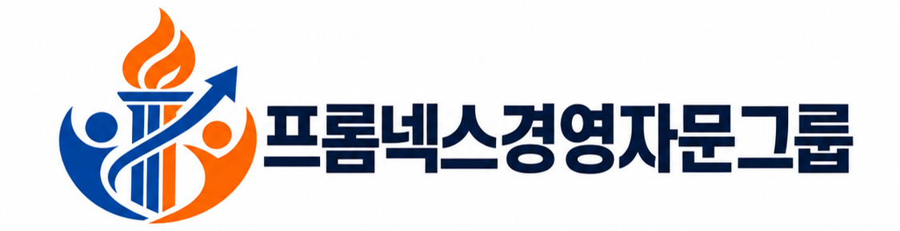

프로넥스 경영자문그룹은 중소기업인증과 재무컨설팅을 함께 다루는 컨설팅 전문회사입니다. 인증은 기업 성장의 기반을 만들고, 재무설계는 대표와 법인의 자산을 지킵니다. 두 영역을 따로 보지 않고 하나의 그림으로 설계할 때, 기업이 누릴 수 있는 효과는 몇 배로 커집니다.
우리는 패키지를 팔지 않습니다. 재무제표와 지분구조, 사업 현황을 먼저 진단하고, 그 기업에 실제로 필요한 것만 제안합니다. 10년 이상 현장에서 쌓은 경험이 그 판단의 근거입니다.
상담 전 기업 현황을 정밀 분석합니다. 필요 없는 서비스는 권하지 않습니다.
영업사원이 아닌, 인증·재무 분야 10년 이상 경력의 컨설턴트가 처음부터 끝까지 담당합니다.
세무사, 변호사, 노무사, 기술사와 협업 체계를 갖추어 실행 단계의 공백이 없습니다.
인증 사후요건, 세제혜택 유지요건 등 끝난 뒤가 더 중요한 일들을 계속 관리합니다.
연구소 설립과 혁신인증으로 세액공제의 토대를 만들고, 그 효과를 가업승계와 상속·증여 플랜으로 연결합니다. 인증 컨설턴트와 재무 컨설턴트가 한 팀으로 움직이기에 가능한 설계입니다.
제조업, IT, 병의원, 유통까지 다양한 업종의 실무 사례를 바탕으로 업종 특성에 맞는 해법을 제시합니다.
무료상담 신청